制作物一覧
カテゴリー
webサイト
実務制作
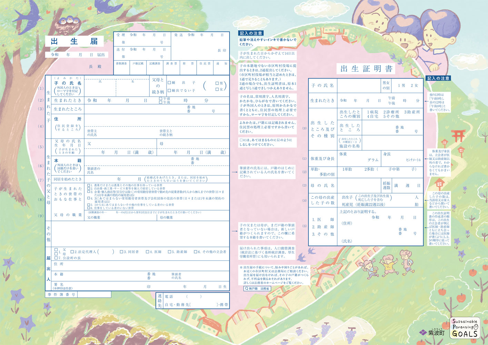
紫波町オリジナルデザイン出生届
実務
専門学生提案のデザイン共同制作業務


盛岡市の専門学生の企画提案により共同制作した、紫波町オリジナル出生届です。
コンセプト：紫波町のあたたかさを知り、町を好きになれる出生届
紫波町をメインに、盛岡市周辺広域の子育て世代をターゲットとし、紫波町オリジナル子育て目標の「SPGs」の周知や、特産品・風土といった町ならではの魅力のアピールを目標にデザインしました。
町外の専門学生と共にアイデアを出すことで、町の魅力を客観的に再確認したり、町外の人々にも知ってもらう機会となりました。 専門学生の視点で描かれた親子や子供たちといった、町のあたたかなイメージを落とし込んだ点が一番のポイントです。
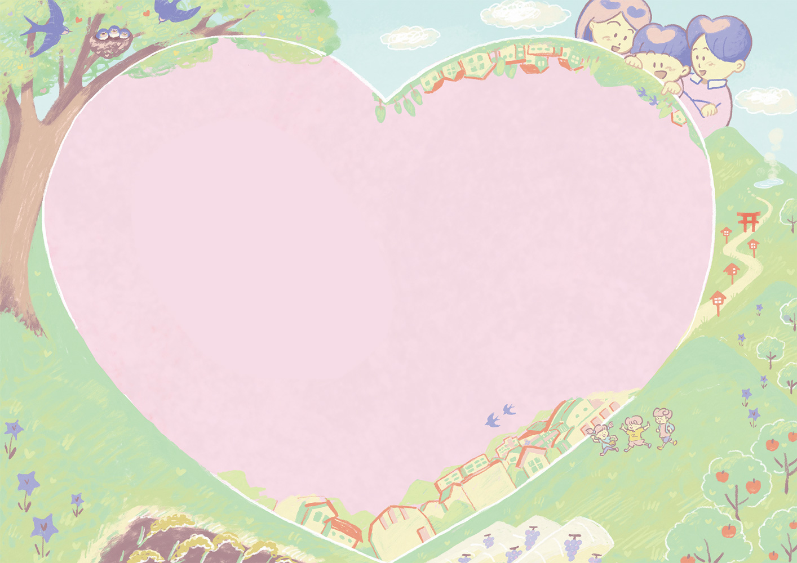
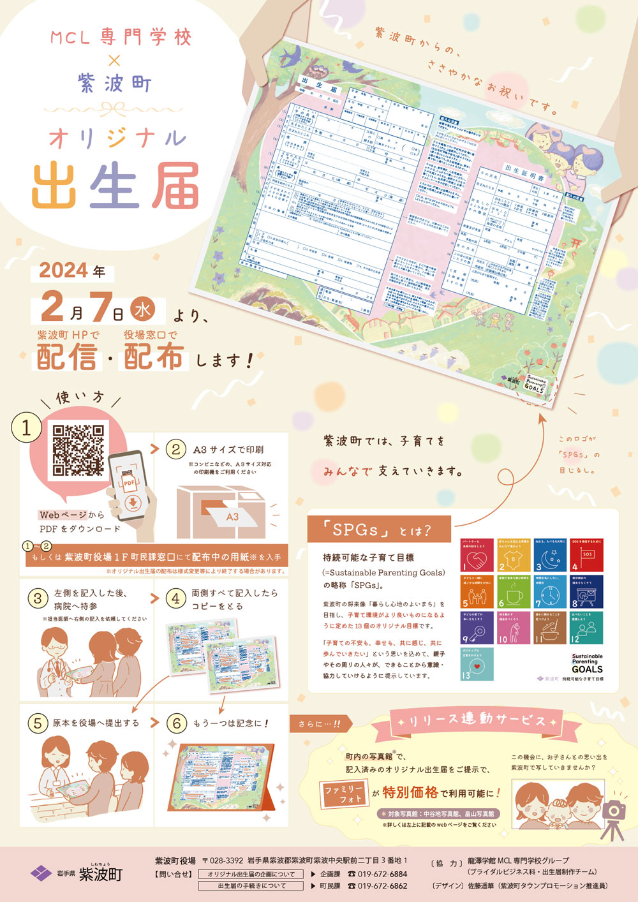
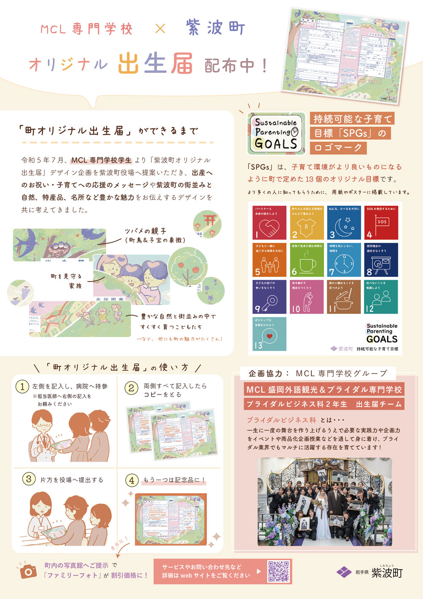
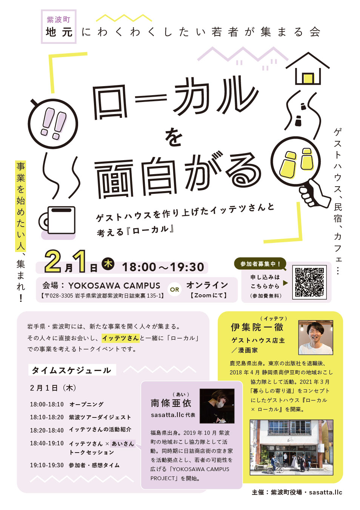
「ローカルを面白がる」ビジュアル・チラシ
実務
イベント告知用ビジュアル＆チラシ制作業務
紫波町内でのトークイベントのビジュアルデザインとチラシです。
地方での新規事業や地域づくりに興味をもつ人が参加したくなることが要件で、「地元（ローカル）にわくわく感を抱 かせる広告」をコンセプトに制作。
イベント内容が、紫波町と静岡県伊豆町の事業を交えた対談であることから、各事業モチーフを左右対称に配置して「相互の発見」の意味合いを深めています。 メインカラーの黄色は「活発的」と「トークイベント話者の事業のイメージカラー」、紫色は「補色で目を引く」「町のイメージカラー」の意味を持つ配色です。
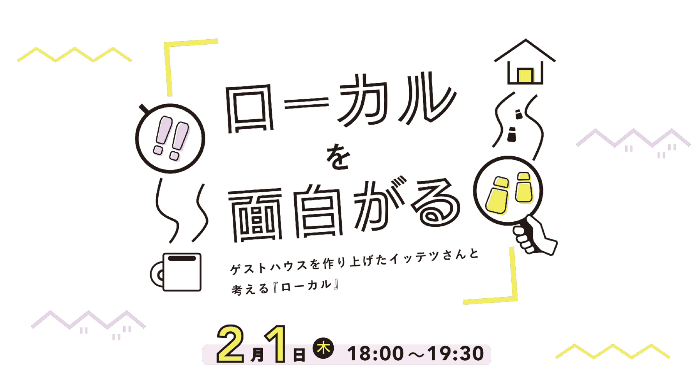
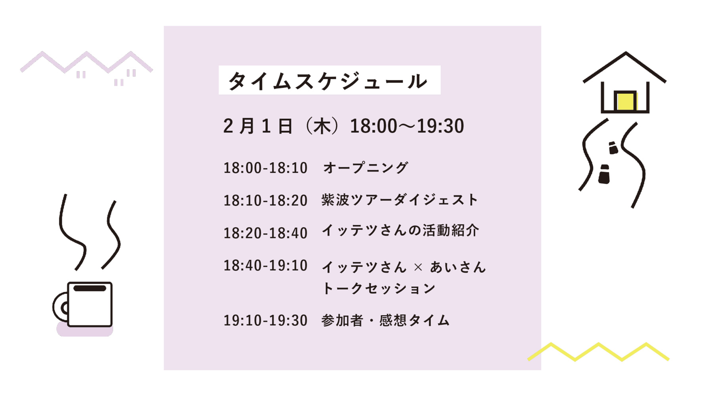
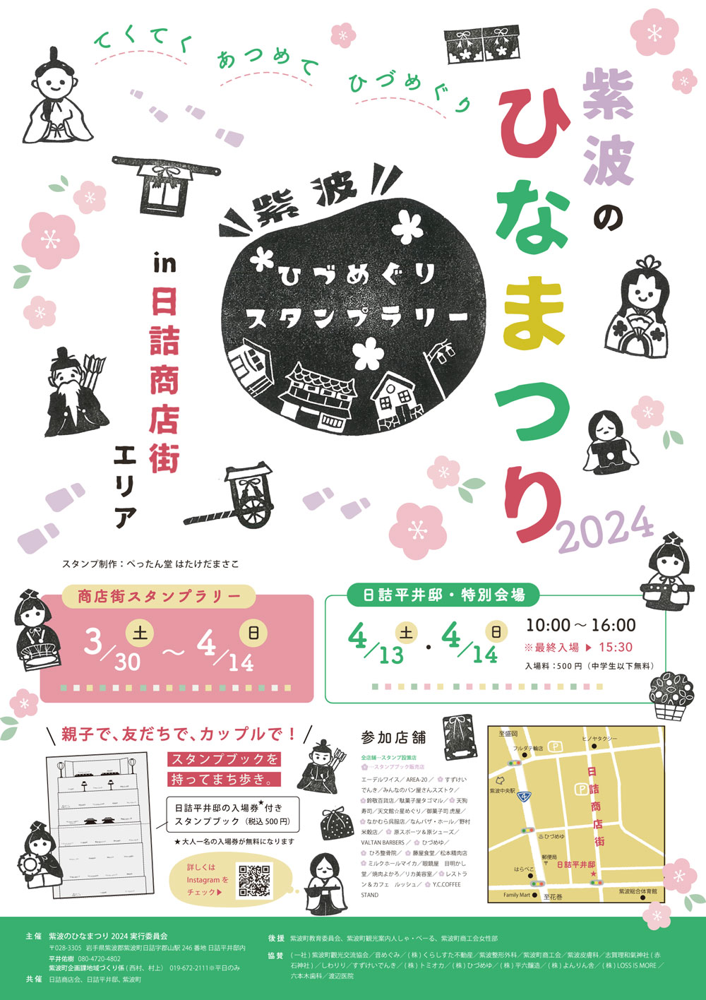
「紫波のひなまつり」ポスター・チラシ
実務
イベントの広告物制作業務
紫波町内の商店街で開催されたひなまつり総合イベントのポスターとチラシです。
町内の小中学生とその家族をメインターゲットに、イベントをきっかけに商店街内の普段入らないお店に入ってもらうことが要件で、コンセプトは「商店街に接点のある小中学生と家族が、イベントに興味を持ち足を運びたくなる広告」です。
スタンプラリーがメイン行事であることから、実際に設置されるスタンプと、足跡のモチーフを巡らせて楽しげな雰囲気を印象付けています。 商店街のイメージカラーの緑色をメインに、ひなまつりらしさと可読性のあるハイコントラストを両立した配色を施しました。 若者向けを意識した初稿の配色は、屋外設置時に目立たないとの商店街店主の意見から、実用性を併せ取り入れた経緯もポイントです。
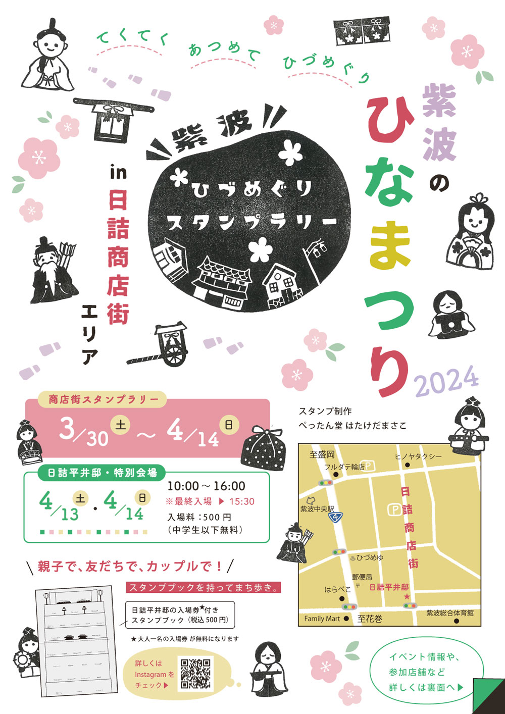
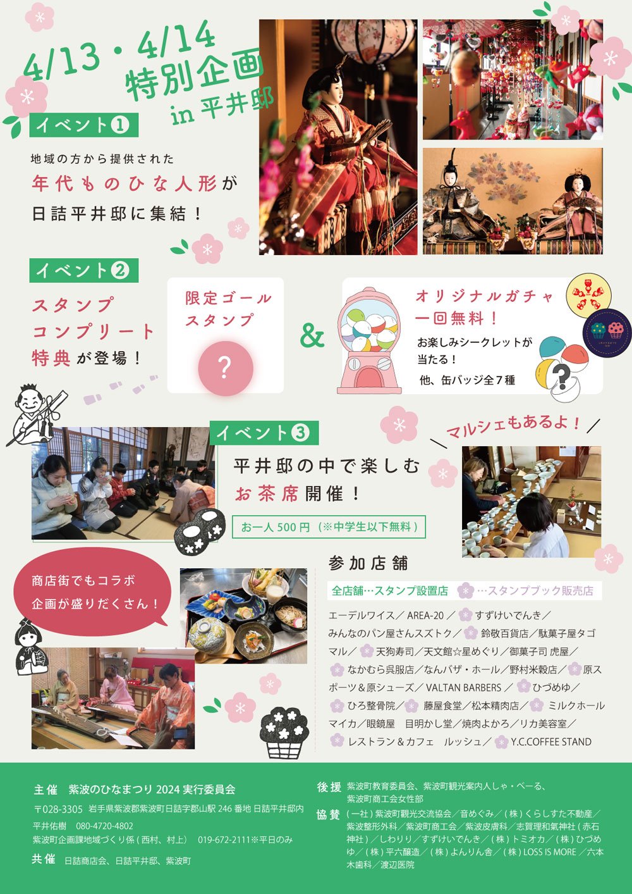
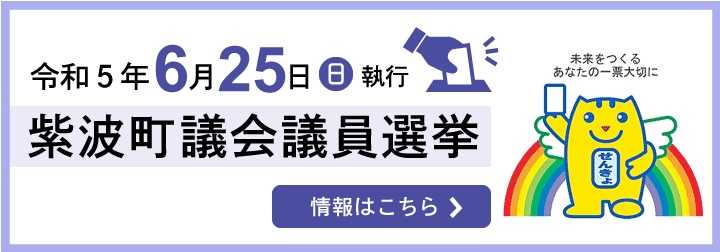
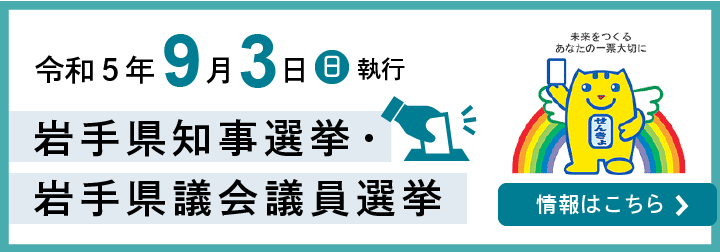
選挙執行日告知バナー
実務
HP掲載用告知バナーの制作業務
紫波町HPのトップページに表示される、選挙執行日を知らせるバナーです。
選挙名や執行日、イメージキャラクターを入れることを要件とし、実際に表示されるサイズの小ささを考慮しながら、各要素が目立つようにバランスを取って配置しました。 選挙対象に合わせ、紫波町と岩手県のイメージカラーを使用している点もポイントです。
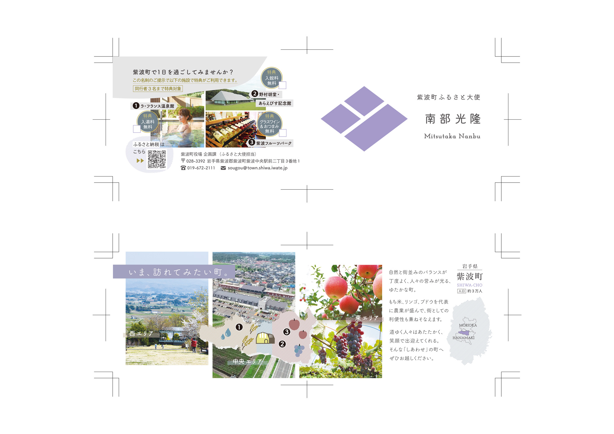
ふるさと大使の名刺
実務
ふるさと大使用名刺の制作業務
紫波町のふるさと大使・南部光隆氏の名刺です。
「ふるさと大使」とは、町の魅力を町内外への発信と魅力向上を図り、町にゆかりのある方に委嘱する取り組みです。 県外在住のふるさと大使が、町を知らない人々へ渡した際に魅力が伝わるように、二つ折りの名刺サイズ内にポイントをまとめています。
ビジネスシーンでの使用を想定し、シックな色合いでありつつ、曲線のモチーフ・フォントやストライプで親しみやすさを印象付けています。
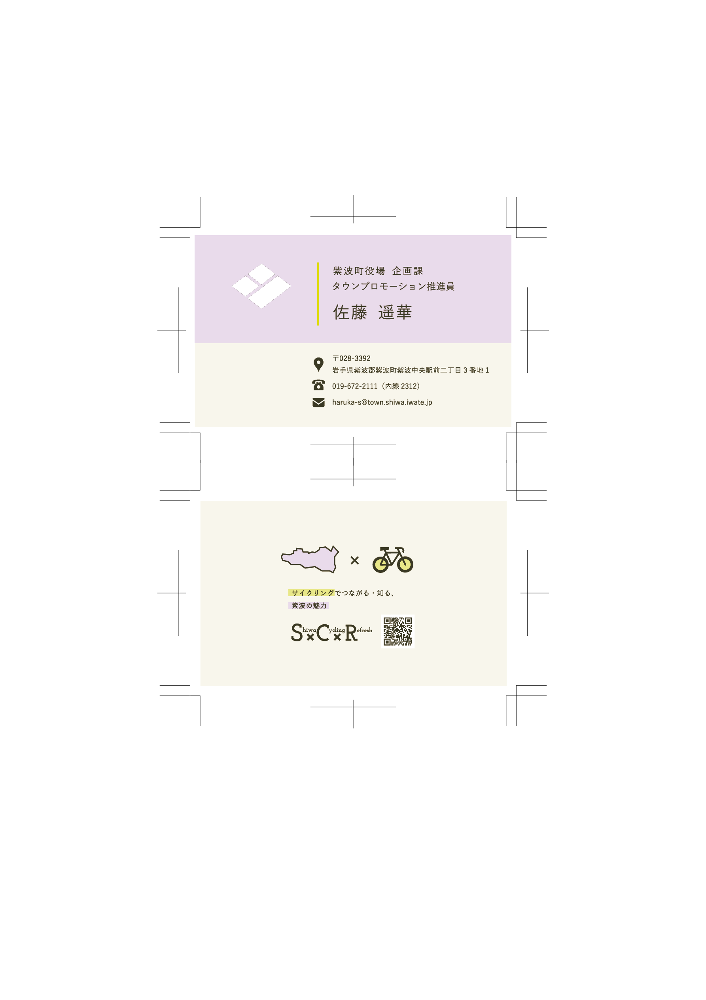
自分の名刺
実務
業務で使用する自分の名刺制作
紫波町タウンプロモーション推進員としての、自分の名刺です。
タウンプロモーションの担い手として、町一番の魅力である「あたたかさ」をコンセプトにしています。裏面には自身が展開する紫波町×サイクリングのPRコンテンツを押し出しています。
町のイメージカラーの紫色と、補色の黄色をメインに使いながら、柔らかいベージュカラーをベースに、文字や主線は茶色寄りの黒であたたかみのある配色にしています。
２学年（在学時課題）


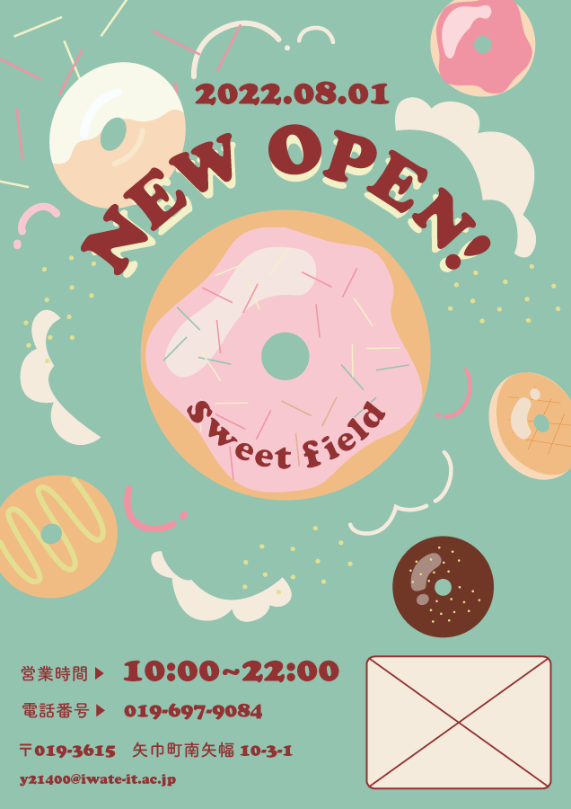
架空のドーナツショップのフライヤー（テーマ：ポップ）
2学年
実践デザイン論（受け手を意識した表現）
テーマを「ポップ」とした、ドーナツショップの新規開店フライヤーという条件での制作課題。
折込チラシとしての使用目的であることも考慮し、半分より上の面で大体の情報が伝わるように配置しています。
10代〜20代の子供、学生というターゲットに合わせ、中央で弾けるような配置やコミカル調のモチーフを使い、「ポップ」を表現しました。
配色も、子供好きのするようなパステルな色合いで、締め色にも茶色を使い、明るい印象になるように設計しました。
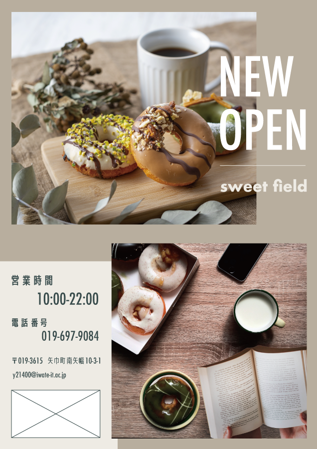
架空のドーナツショップのフライヤー（テーマ：シック）
2学年
実践デザイン論（受け手を意識した表現）
テーマを「シック」とした、ドーナツショップの新規開店フライヤーという条件での制作課題。
「ポップ」に対して、こちらは社会人が利用するドーナツショップという想定でのデザインです。
店内の落ち着いた雰囲気や、利用する様子をイメージしやすくするように、写真を配置しました。
また、全体の色をグレイッシュトーンにまとめ、余白を意識した配置にしています。
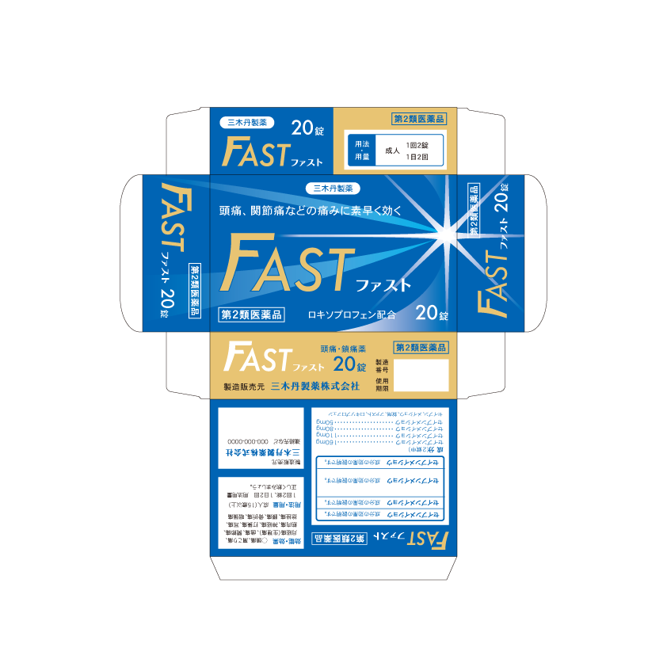
架空の薬パッケージ
2学年
実践デザイン論（受け手を意識した表現）
課題条件：野球選手の「大谷翔平」を宣伝キャラクターとしている、架空の薬
「大谷翔平」の投球のイメージから、薬の効き目の速さを連想し、「FAST」というロゴを作成.
背景はスピード感を表す図面にしています。
また、鎮痛剤という設定から、炎症を鎮める印象を持たせるように全体を青色で配色しています。
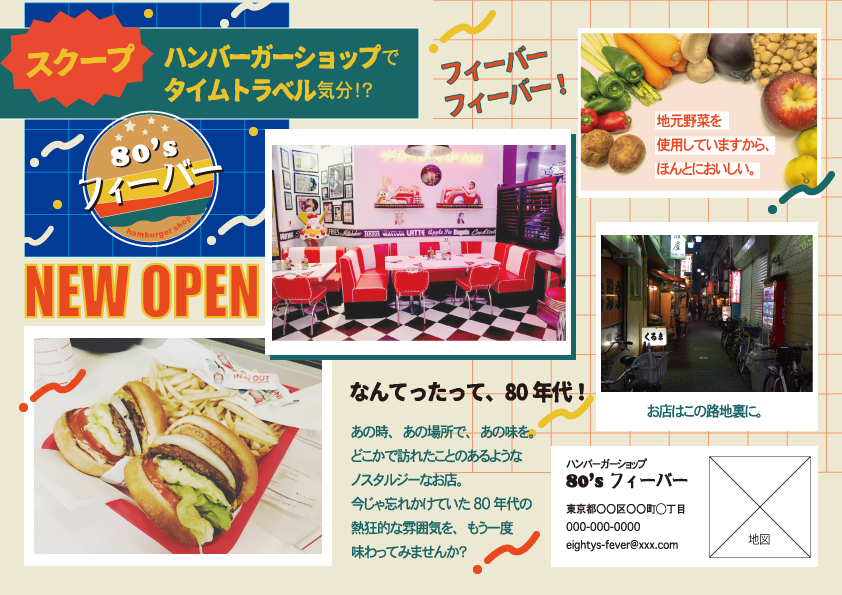
架空のハンバーガーショップのフライヤー
2学年
実践デザイン論（受け手を意識した表現）
課題テーマ：「80'sフィーバー」
80年代がモチーフのハンバーガーショップを宣伝する広告ツールを制作する課題。
ターゲットが80年代を謳歌した世代=50代〜70代であることから、紙媒体を選択し、フライヤーを制作しました。
普段触れることがない「80年代」を表現するモチーフ選びや、配色などを探るのが難しかったです。
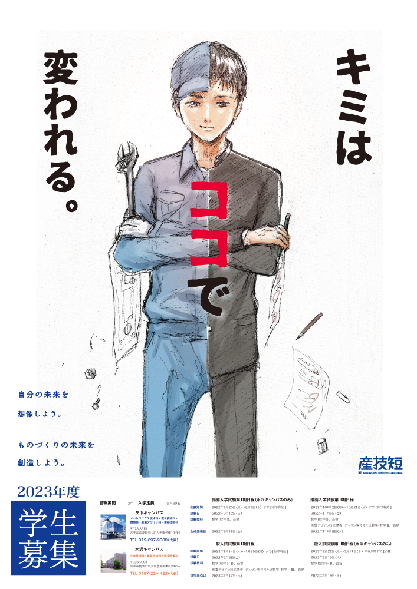
産技短・学生募集ビジュアル
2学年
実践デザイン論（受け手を意識した表現）
学校の学生を募集するビジュアルの制作課題。
ターゲットは進学を考える高校生で、各高校や公共施設内に掲示する目的のポスターを制作しました。
コンセプトは、「進路に迷う高校生の興味を引き、入学試験へ踏み込みたい気持ちになる」ビジュアル。
現代の高校生の目に留まりそうなコミック調の人物絵で、今の進路に悩む自分から産技短へ入った自分への変化を、一面で表しています。
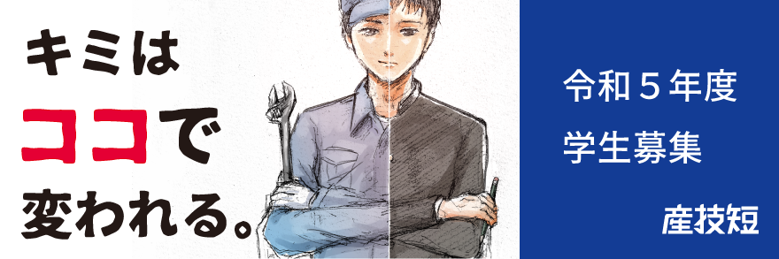
１学年（在学時課題）


{kind=link}
{kind=link}
{kind=link}
{kind=link}
{kind=link}
{kind=link}
{kind=link}
{kind=link}
{kind=link}
{kind=link}
{kind=link}
{kind=link}
{kind=link}
卒業研究展・ビジュアル制作
1学年
製品デザイン基礎実習II
コンセプトは「発信」
この卒業研究展から、学生のアイデアを世間へ発信する、という意味を図面で表しました。
電球が世界を発展させる発明であったように、学生の研究もいずれ世間一般に流通するものごとを産み出す要素につながるということを表現しています。
他にも、！マークによる光の表現は、全学科の公式シンボルカラーを参照しており、各科それぞれのひらめきをイメージしています。
電線は、？マークを描き、疑問から課題点を見つけ出し、解決策のアイデアをひらめくという流れを意識しています。
といったように、図面の各モチーフは卒業研究展の意義や流れを象徴しています。
架空の動画サムネイル
1学年
マルチメディア実習
課題テーマ：動画投稿サイトにありがちなサムネイル
DTPソフトでの制作の演習授業にて、課題テーマに沿って自由にアイデアを出し、Photoshopを使って制作した課題。
自分が選んだテーマは、「ホラー系動画でよく見るレイアウト」でした。
動画のサムネイルなので、小さく表示されていても動画の内容がわかるようになるべく文字を大きく、目立つように心がけました。
添削では、「下部の文字のテクスチャで可読性を損なっている。塗りつぶすか、シャドーを消すとすっきりして読みやすくなる。」
とのご指摘をいただき、印象を優先して過度な装飾をするより、情報の伝わりやすさを重視するという、デザインの根本的な考え方を学びました。
また、Photoshopでの写真加工や配置、文字装飾などの操作を実践し、身につける機会にもなりました。
校舎内の危険を注意喚起するピクトグラム
1学年
安全衛生工学,
マルチメディア実習
校舎内にある危険な箇所を発見し、起こりうる事故を予測・注意を促すピクトグラムを制作する課題。
自分が選んだ場所は、２部屋の間をつなぐ通路の横に設置された、物置部屋のドア。
この通路が狭く、ドアの開閉の際、通行者にぶつかる危険性を予測し、その様子をピクトグラムで表しました。
２色のピクトグラムという省略された図面で、危険な場面を表現するのは難しいことでした。
危険な部分を強調し、不要な要素を取り除くという、インフォグラフィックの制作過程を経験することができた課題でした。
名刺
1学年
マルチメディア実習
自分の名刺を制作する課題。
名刺という小さな紙媒体の中に、自分に関する必要な情報を絞り、文字や図面で表すという制作です。
名刺の役割を考え、まず自分の名前を目に入れてもらえるように表の先頭に大きく記述。
一目で所属、連絡先が分かるように、文字の情報は少なく表にまとめました。
背景や裏面の図面では、自分の専攻分野がwebデザインであることを象徴する、PCモニターを描画しています。
デジタル媒体を通して、世の中の様々な情報を伝えるデザインを行う様子を、幾何学系のモチーフで抽象的に表現しました。
自己紹介シート
1学年
マルチメディア実習
ターゲットは初対面の相手で、自分のことを名刺より詳しくかつ、まとまった情報量で伝えるためのシートの制作課題。
A4サイズの紙面に印刷するシートとして作成しています。
コンセプトとして、初対面の方へ向けて堅くなりすぎず、コミカルで親しみやすく伝わるようなデザインにしました。
項目のまとめ方や、Z型に流れる導線配置、自分の印象を与える配色など、設計にこだわっています。
架空のチョコレートパッケージ
1学年
マルチメディア実習
課題テーマ：季節×チョコレート
自分が選んだテーマは「夏のチョコレート」
夏という季節から、海のような爽快さを想像し、「じっとりとした暑さでも、食べれば気分爽快になる」というコンセプトを立てました。
気分の切り替えを表す「Switch」と「chocolate」を掛け合わせたロゴも自分で考え、デザインにこだわりました。
背景は夏の海の波に乗り、飛沫が飛ぶようなモチーフの形や配置をしています、
配色も、ブルーベリーやミントの味を表現しながら、チョコであることも伝わるように青色と茶色を取り入れています。
架空の地図
1学年
マルチメディア実習
指定された地図の情報を基に、簡略化した図面を作成するという課題。
地図であるからには、位置関係や道の形状などを再現しつつ、必要な情報が一目で分かるように簡略化する必要があります。
文字の位置や周囲の建物の抜き出し、目的地の強調の仕方など、情報整理に試行錯誤しました。
配色も、シンプルでありながら見やすい色使いを心がけました。
ポスタリゼーション
1学年
色彩実習
自分の好きな人物の写真を階調化させ、紙面に描くという課題。
Photoshopのツールでカラー写真を白黒の8階調へ変換させ、その画像を基に紙面へ転写。
8階調の色には、自分で色彩・彩度・明度を調整した8色を当てました。この時、色彩を赤色一色ではなく、暗色を青みがけることで単調化を防ぐように工夫しました。
階調数を多くした分、細かく描写することになり、完成までに多くの時間がかかりました。